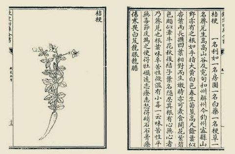

大明周藩传世典籍与学术著述全考
明代周藩以仁孝好学、崇文尚医著称于世。始祖周定王朱橚在开封建“王府药圃”与“良医所”，开创救荒本草学与方剂集大成之先河；历代嗣王兼善诗词、曲艺与善本刊刻，形成了璀璨的周藩文献谱系。
🌿 始祖朱橚农医科学巨著
《救荒本草》（全二卷·四百一十四种）
世界食用植物学奠基作

📖 明周王府原刻《救荒本草》木刻植物图谱书影
朱橚设圃于开封王府，广纳中原、嵩山、太行之野生草木，亲验其苗叶花实，辨识可食部位与去毒加工之法。全书分为草部（245种）、木部（80种）、米谷部（20种）、果部（23种）、菜部（46种）。每种植物皆附写实木刻插图，图文并茂，首创以“救荒度饥”为目的之植物分类体系。
“古人以农桑为本，医药为先……予因采摘草木之可食者，种植于圃，绘图析理，以备岁饥之用。” ——《救荒本草·序》
《普济方》（全一百六十八卷·六万一千七百三十九方）
中医古籍收方之冠
周王府广收天下医书秘籍，上溯《黄帝内经》《伤寒论》，下逮金元四大家，历时十余年编纂而成。涵盖医论、脏腑、伤寒、妇科、儿科、针灸、痈疽等全科，完整保存了大量宋元以前已佚失的医方典籍。
| 著作名称 | 主编时代 | 收录医方数 | 历史地位 |
|---|---|---|---|
| 《太平圣惠方》 | 北宋 (992) | 16,834 首 | 宋代官修巨著 |
| 《圣济总录》 | 北宋 (1117) | 近 20,000 首 | 宋徽宗敕修 |
| 周藩《普济方》 | 明初 (1398) | 61,739 首 | 中国古代第一大方剂百科全书 |
《袖珍方》（全四卷·三千余方）
战地民生急救指南
系定王从《普济方》中提炼而出的便携急救手册。专选药材易得、炮制简便、见效迅捷之方，供随军行伍及偏远乡村无医之地应急治病，明清两代多次翻刻流传。
《保生余录》（全三卷）
道家养生与食疗
总结四时调摄、起居禁忌、食疗药膳、老人保元等养生法则，倡导治未病与顺应自然的摄生思想。
🎭 宪王朱有炖戏曲与文学名著
《诚斋乐府》（杂剧三十一种·散曲八卷）
大明戏曲鼎峰
存世代表作包括《义勇辞金》《关云长千里独行》《黑旋风仗义疏财》《牡丹仙》《香囊记》等。宪王精通音律，作品兼具北曲豪劲与南曲婉丽，开创了明代宫廷王府演剧与市民市井曲艺交融的新范式。
《元宫词》（全一百首）
元大都风物诗史
以百首七言绝句生动记载元代大都大内宫殿格局、岁时庆典、宫廷饮食、服饰仪仗，是研究蒙元民俗与北方风土不可多得的珍贵诗史。
📖 周王府重刻与校勘珍本善本
《幼幼新书》（全四十卷）
周藩校勘古籍
重刊宋代庄绰儿科经典。开封王府以宋版为底本，广校诸家，使这部收罗千首儿科古方、图谱的医学巨典免于湮灭。
《本草发挥》（全四卷）
金元医理名著
元代徐彦纯辑录张元素、李杲、朱震亨等金元诸家本草药性理论。周藩精刻本校勘精准，为明代中原医家研习脏腑辨证之必读书目。